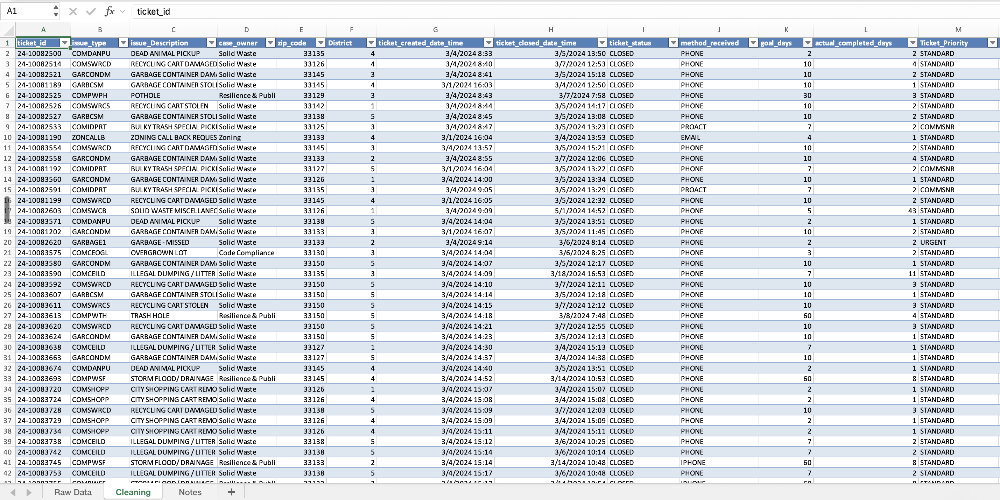
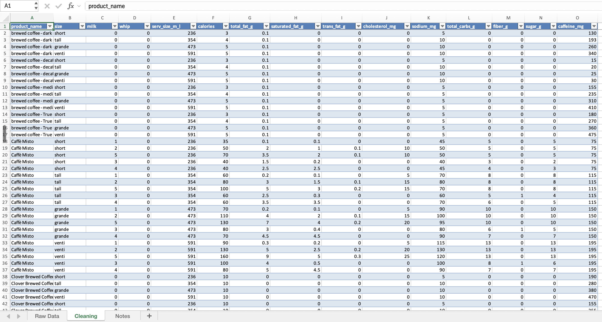
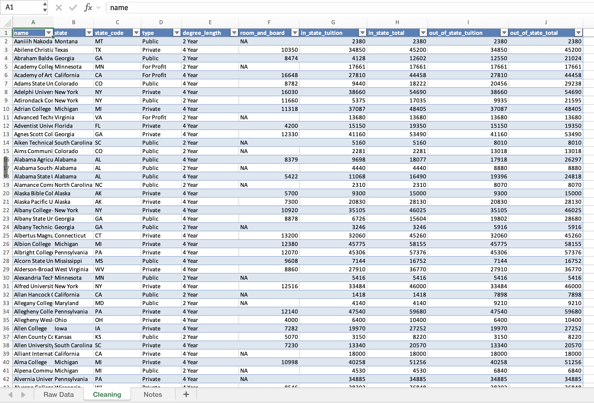

Today: you build the workbook you keep until Tue Dec 8. You work with your partner. One of you owns the file in OneDrive and shares it with the other.
At the end you have three sheets: Raw Data, Cleaning and Notes. You also know how messy your data is, and you have your first question.
Before you start
Use Excel for Microsoft 365 on a Windows computer. Sign in with your MDC account.
Your dataset is the one you picked on Nov 12. Open only the boxes for your dataset. The columns are on the kickoff page, section 3.
Work as a pair, one task at a time. The partner who saved the file types. The other partner reads the steps and checks. Swap for the next task if you like.
Today's work is not graded. The lists on this page help you check your own work. Screenshots are for you: skip them if you are short on time.
Stuck? Ask your professor or the tutor. At the bottom of the page: how your project is graded.
Save often: Ctrl + S.
How to use this page
Each task tells you the goal and the question. It does not tell you every click. You know these tools.
Read the Nudge first. Still stuck? Open Hint 1 (the tool), then Hint 2 (the key step). The Solution is last. Try first.
GUIDED tasks show the first few clicks. You finish the rest.
Type your answer and click Check. CORE tasks first. EXTRA tasks if you have time.
Your checkmarks save on this computer.
Screenshot boxes: press Windows + Shift + S, drag a box around your work, then click the screenshot box on this page and press Ctrl + V. Your screenshots stay on this computer.
Your answers go in these cells: the three formulas for the mess check go in the Cleaning sheet, in the column named in your dataset's box. Your question and your three problems go in the Notes sheet.
Exercise 1 · Hand in
Your Nov 12 box
Question: Does your professor know your group, your dataset and your reason?
Your professor needs this before you start. It takes two minutes.
Task 1 · Give your professor your box
CORE
Open the kickoff page on the computer and browser you used on Thu Nov 12. Find the box in section 4. Give your professor the three things in it: who is in your group, which dataset you picked, and why.
NudgeOpen the kickoff page, section 4. Read the box to your professor. Working alone? Say that you are alone, then say the dataset and why.
Hint 1
The box is on the kickoff page, in the section called Bring this on Tuesday, Nov 17.
Hint 2
Your box saves on the computer you used on Nov 12. If it is empty, you are on another computer. Just tell your professor the three things.
Solution
Your professor knows your group, your dataset and your reason. Nothing else is needed for this task.
Exercise 2 · Set up
Build the workbook
Question: Is your workbook saved in OneDrive, shared, and set up with three sheets?
This is the workbook you keep until Tue Dec 8. Set it up once, then every class builds on it. Sheet names: Raw Data, Cleaning, Notes.
Task 1 · Open your CSV and save it in OneDrive
COREGUIDED
Download the CSV for your dataset. Open it in Excel. Save it as an Excel Workbook in OneDrive, in your MDC account, with the name Final-LastName1-LastName2.xlsx. Example: Final-Garcia-Lopez.xlsx. Working alone: Final-Garcia.xlsx. The partner who saved the file types. The other partner reads the steps and checks.
Open File Explorer, click Downloads, double-click the file. It opens in Excel. (Steps are in kickoff section 2.) If a yellow bar says Protected View, click Enable Editing.
Click File, then Save As (some versions say Save a Copy).
Choose OneDrive - Miami Dade College. Type the file name.
Do not skip this step. In Save as type, choose Excel Workbook (*.xlsx). Click Save.
Hint 1
Save As is on the File menu. The OneDrive folder is in the list on the left of the Save As window.
Hint 2
The file name must end in .xlsx, not .csv. If you do not see OneDrive, sign in at the top right of Excel with your MDC account.
Solution
File, Save As, OneDrive - Miami Dade College, file name Final-LastName1-LastName2.xlsx, type Excel Workbook (*.xlsx), Save. The title bar now shows your file name and .xlsx.
Your screenshot
The top of Excel with your file name and OneDrive in the title bar.
Click here, then press Ctrl + V
Saved on this computer only. Show it to your professor or the tutor if you get stuck.
Task 2 · Share the workbook with your partner
COREGUIDED
The partner who saved the file shares it with the other so both can open and edit it. The other partner reads the steps and checks. Working alone? Skip this task.
Guided start
Click Share at the top right of Excel.
Type your partner's MDC email address.
Make sure it says Can edit.
Click Send. Your partner opens the email and clicks the link. If the file opens in the browser, your partner clicks Open in Desktop App.
Hint 1
The Share button is at the top right of the Excel window, next to Comments.
Hint 2
If it does not say Can edit, click the link-settings gear in the Share window, choose Specific people, tick Allow editing, then Apply.
Solution
Share, partner's MDC email, Can edit, Send. Your partner clicks the link in the email and opens the file in Excel on the computer (Open in Desktop App if it opened in the browser). The top right says Editing, not Viewing.
Your screenshot
The Share window with your partner's email and Can edit.
Click here, then press Ctrl + V
Saved on this computer only. Show it to your professor or the tutor if you get stuck.
Task 3 · Name the Raw Data sheet and copy it to Cleaning
CORE
Your workbook needs a sheet called Raw Data that stays exactly as the CSV. Then you make a copy of it called Cleaning. You work in Cleaning. You never type in Raw Data.
NudgeDouble-click the sheet tab to rename it. Right-click the tab, choose Move or Copy, tick Create a copy.
Hint 1
Sheet tabs are at the bottom left. Right-click a tab to see Rename and Move or Copy.
Hint 2
In Move or Copy, tick Create a copy and pick (move to end). The copy is named Raw Data (2). Rename it to Cleaning.
Solution
Two tabs: Raw Data and Cleaning, both with the same rows and columns.
Your screenshot
The sheet tabs at the bottom: Raw Data and Cleaning.
Click here, then press Ctrl + V
Saved on this computer only. Show it to your professor or the tutor if you get stuck.
Task 4 · Format the Cleaning sheet as a Table
CORE
On the Cleaning sheet, turn your data into a Table and give it the name tblClean.
NudgeClick one cell in the data. Press Ctrl + T. Tick My table has headers. Then type the name in the Table Name box.
Hint 1
After Format as Table, the Table Design tab appears when you click inside the table. The Table Name box is at the far left of that tab.
Hint 2
Type tblClean in the Table Name box and press Enter. Table names have no spaces.
Solution
The Cleaning sheet shows colored rows with filter arrows. Click inside it: the Table Design tab shows and the Table Name box says tblClean.
Your screenshot
The Table Design tab with the Table Name box showing the name.
Click here, then press Ctrl + V
Saved on this computer only. Show it to your professor or the tutor if you get stuck.
Task 5 · Add a Notes sheet with your question
CORE
Add a new sheet called Notes. In A1 type Notes. In A3 type Central question. In B3 write your central question in one sentence, in plain English. A draft is fine. You can change it later.
NudgeClick the + next to the sheet tabs. Rename the new sheet Notes. Look at the kickoff page for ideas, or use your own.
Hint 1
The + button is right after the last sheet tab. Double-click the new tab to rename it.
Hint 2
One sentence. It asks about your dataset and ends with a question mark. Example shape: Which group has the highest average of something?
Solution
A Notes sheet with Notes in A1, Central question in A3 and your one-sentence question in B3.
Your screenshot
The Notes sheet with your question in B3.
Click here, then press Ctrl + V
Saved on this computer only. Show it to your professor or the tutor if you get stuck.
Exercise 3 · Sheet: Cleaning, then Notes
How messy is your data?
Question: What problems does your dataset have, and how many rows does each touch?
A good project starts with knowing the mess. Open only the box for your dataset. The answers are the same for every pair on that dataset.
Open if your dataset is Miami 311 requests
Mess check: Miami 311 requests
CORE
Find out how messy your dataset is. First read the row count in the status bar. Then type three formulas in R1, R2 and R3 on the Cleaning sheet. Column R is a few columns to the right of your table. Excel does not add it to the table, and the columns between stay free for helper columns later. The four Check rows follow this order: row count, then the three formulas.
NudgeFor the row count, click a cell in the ticket_id column inside the table and press Ctrl + Space once. Read Count in the status bar at the bottom. For the three formulas, type =COUNTBLANK( or =COUNTIF( then point at the top edge of the column header, where the pointer turns into a black arrow, and click once. Excel writes the column name. Write CLOSED with no stars around it.
Hint 1
Use COUNTBLANK for empty cells. Use COUNTIF for the other two. A double space is two spaces in a row. Ctrl+Space once selects the data of that column without the header. If the status bar does not show Count, right-click the status bar and tick Count.
Hint 2
If Excel wrote [#Headers] in your formula, you clicked the header cell. Delete the formula and try again at the top edge, or type the column name yourself, for example tblClean[ticket_status].
COUNTIF needs the column and the text to look for. For the double space, the text is: a star, a space, a space, a star, in quotes.
If you get 4,136 for CLOSED, you used stars. The stars also count DUPLICATE (CLOSED). Write "CLOSED" with no stars.
Cells R1 to R3 with the three results, and the status bar Count.
Click here, then press Ctrl + V
Saved on this computer only. Show it to your professor or the tutor if you get stuck.
Open if your dataset is College tuition and costs
Mess check: College tuition and costs
CORE
Find out how messy your dataset is. First read the row count in the status bar. Then type three formulas in N1, N2 and N3 on the Cleaning sheet. Column N is a few columns to the right of your table. Excel does not add it to the table, and the columns between stay free for helper columns later. The four Check rows follow this order: row count, then the three formulas.
NudgeFor the row count, click a cell in the name column inside the table and press Ctrl + Space once. Read Count in the status bar at the bottom. For the three formulas, type =COUNTIF( then point at the top edge of the column header, where the pointer turns into a black arrow, and click once. Excel writes the column name. In room_and_board and state, NA is text, not an empty cell.
Hint 1
Use COUNTIF with the text NA in quotes for the first two. Use COUNTIF with a double space for name. COUNTBLANK would show 0 for room_and_board, because NA is not empty. Ctrl+Space once selects the data of that column without the header. If the status bar does not show Count, right-click the status bar and tick Count.
Hint 2
If Excel wrote [#Headers] in your formula, you clicked the header cell. Delete the formula and try again at the top edge, or type the column name yourself, for example tblClean[state].
COUNTIF needs the column and the text to look for. For the double space, the text is: a star, a space, a space, a star, in quotes.
Cells N1 to N3 with the three results, and the status bar Count.
Click here, then press Ctrl + V
Saved on this computer only. Show it to your professor or the tutor if you get stuck.
Open if your dataset is Starbucks drinks nutrition
Mess check: Starbucks drinks nutrition
CORE
Find out how messy your dataset is. First read the row count in the status bar. Then type three formulas in T1, T2 and T3 on the Cleaning sheet. Column T is a few columns to the right of your table. Excel does not add it to the table, and the columns between stay free for helper columns later. The four Check rows follow this order: row count, then the three formulas.
NudgeFor the row count, click a cell in the product_name column inside the table and press Ctrl + Space once. Read Count in the status bar at the bottom. For the three formulas, type =COUNTBLANK( or =COUNTIF( then point at the top edge of the column header, where the pointer turns into a black arrow, and click once. Excel writes the column name. The zeros are real numbers, not blanks.
Hint 1
COUNTBLANK counts empty cells. COUNTIF with 0 counts cells that hold the number 0. Ctrl+Space once selects the data of that column without the header. If the status bar does not show Count, right-click the status bar and tick Count.
Hint 2
If Excel wrote [#Headers] in your formula, you clicked the header cell. Delete the formula and try again at the top edge, or type the column name yourself, for example tblClean[calories].
In this file no cell is empty, so COUNTBLANK gives 0. That is a real answer. To find the zeros, use COUNTIF and write 0 as the thing to look for.
Solution
Row count: 1,147.
=COUNTBLANK(tblClean[calories]) gives 0.
=COUNTIF(tblClean[calories],0) gives 40.
=COUNTIF(tblClean[milk],0) gives 165.
Your screenshot
Cells T1 to T3 with the three results, and the status bar Count.
Click here, then press Ctrl + V
Saved on this computer only. Show it to your professor or the tutor if you get stuck.
Write three problems in Notes
CORE
Open the Notes sheet. Below your question, write three problems you found in your data. One line each. Say which column, what is wrong and how many rows. Use the numbers from the mess check, or look at the columns yourself.
NudgeIn A5 type Three problems found. Write one problem per line in B5, B6 and B7. Start each with its number: 1. , 2. , 3. .
Each line has three parts: the column, what is wrong, how many rows. Example shape: Column X has N blank cells.
Solution
Any three real problems that you can point to in the data. Use your own words. Example shape: Column X has N cells that say NA.
Your screenshot
The Notes sheet with your question and three problems.
Click here, then press Ctrl + V
Saved on this computer only. Show it to your professor or the tutor if you get stuck.
Extra: find a fourth problem
EXTRA
Look at your data again. Find one more problem. Write it in B8 as 4. ....
NudgeScroll through the Cleaning sheet. Look at columns you did not count yet.
Hint 1
Sort or filter a column with the arrows in the table header to see odd values.
Hint 2
Look for blanks, odd text, zeros, repeated rows or codes that need words.
Solution
Any real problem you can point to, with the column and how many rows.
Done today when...
Answer each line with Yes or No. Fix every No before you leave.
0 of 6 Yes
What done looks like: Miami 311 requests

Screenshot coming
Tabs: Raw Data, Cleaning, Notes.
Raw Data: cell A1 says ticket_id, A2 says 24-10082500. Ctrl + End goes to N4206.
Cleaning: a Table named tblClean, 14 columns. The status bar Count for column A is 4,205.
Notes: Central question in A3 with your question in B3. Three problems found in A5 with the problems in B5 to B7.
What done looks like: Starbucks drinks nutrition

Screenshot coming
Tabs: Raw Data, Cleaning, Notes.
Raw Data: cell A1 says product_name, A2 says brewed coffee - dark roast. Ctrl + End goes to O1148.
Cleaning: a Table named tblClean, 15 columns. The status bar Count for column A is 1,147.
Notes: Central question in A3 with your question in B3. Three problems found in A5 with the problems in B5 to B7.
What done looks like: College tuition and costs

Screenshot coming
Tabs: Raw Data, Cleaning, Notes.
Raw Data: cell A1 says name, A2 says Aaniiih Nakoda College. Ctrl + End goes to J2974.
Cleaning: a Table named tblClean, 10 columns. The status bar Count for column A is 2,973.
Notes: Central question in A3 with your question in B3. Three problems found in A5 with the problems in B5 to B7.
How your project is graded
The project is 100 points. Seven parts. Both partners get the same grade. Each of you submits the file. There is no Q&A after the talk.
Part
What we look for
Points
A
Question and dataset Your question and your dataset name are written on the Dashboard. Your data can answer the question.
10
B
Raw data and Final sheets A Raw Data sheet you did not change. A Final sheet with values only: one header row, no blank rows, no blank columns.
10
C
Cleaning A Cleaning sheet that started as a copy. A Table. One explore or clean function. One math function. Real problems fixed. A short note that says what you changed.
20
D
PivotTables and findings 2 or 3 PivotTables built from Final. They answer your question. One sentence next to each that says what you found. The numbers in the sentence match. Easy to read.
20
E
PivotCharts and Dashboard A PivotChart for each PivotTable, each with a title. A Dashboard with all the charts, none on top of another, all seen without scrolling. Written insights that say what someone should do.
15
F
Live presentation Tue Dec 8. 5 to 8 minutes. Excel only. Start with your question, your dataset name and where the data came from. Walk through each sheet in order and say what you did and why. End on the Dashboard and say your insights. Pairs: both partners speak.
20
G
File and hand-in One .xlsx file. Every sheet has a clear name. Your names on the Dashboard. Each of you submits the same file in Canvas before class on Tue Dec 8.
5
Total
100
Bonus: a Slicer, +3
A Slicer on the Dashboard that works on at least two charts. It is not required. We have not taught it yet. We will show you in class. The total stays at 100 or less.
Things you may not have heard yet
The kickoff page said grading details come in class. These are on the list:
Your question and the dataset name are written on the Dashboard.
In Final: one header row, no blank rows, no blank columns, a name on every column.
A short note on the Cleaning sheet, one line for each change.
One sentence next to each PivotTable that says what you found.
A title on every PivotChart that says what it shows.
No chart sits on top of another. You can see every chart on one screen.
Written insights on the Dashboard. An insight says what someone should do, based on a finding.
In the talk: start with your question, your dataset name and where the data came from.
In the talk: go through the sheets in order, say what and why for each, end on the Dashboard, and say the insights out loud.
Every sheet has a clear name. Not Sheet1.
Your names are on the Dashboard. Each of you submits the workbook in Canvas before class on Tue Dec 8.